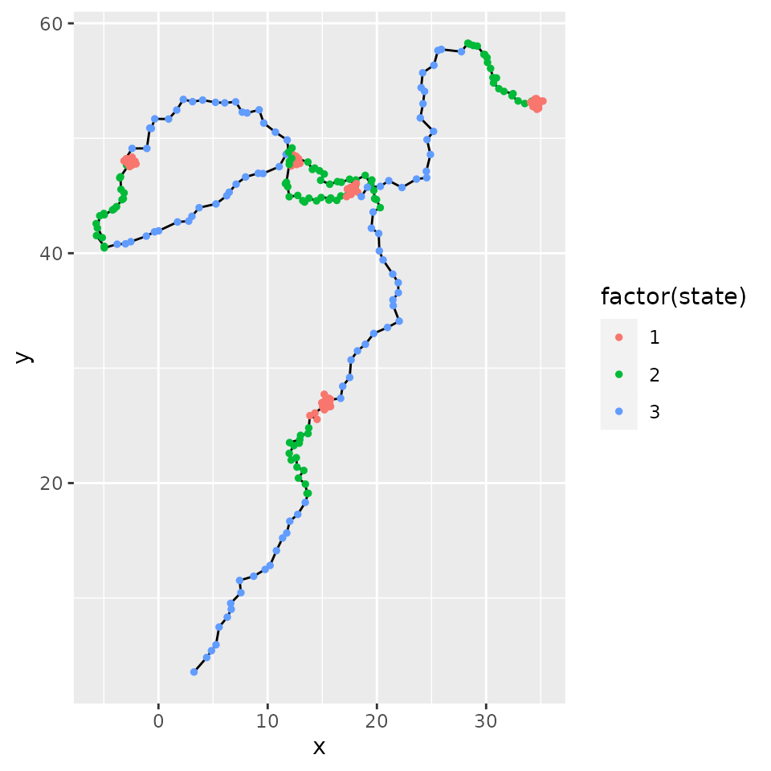
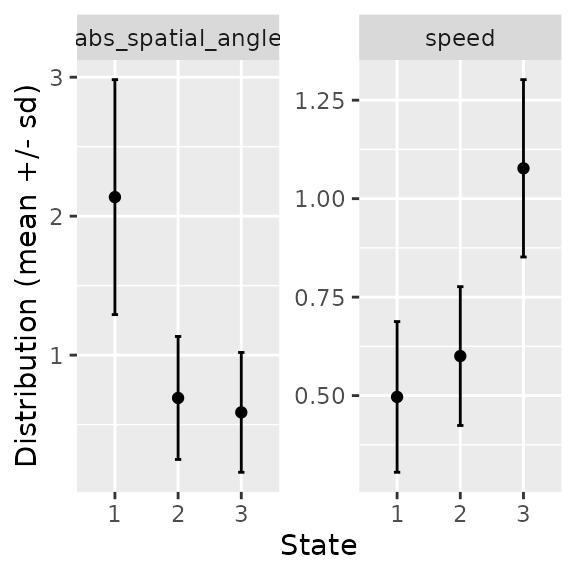
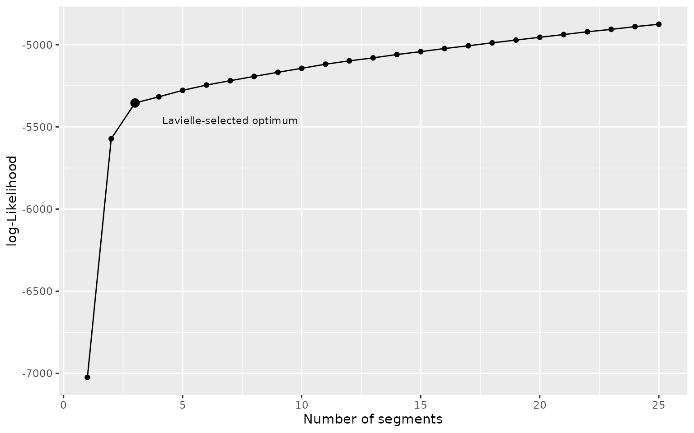
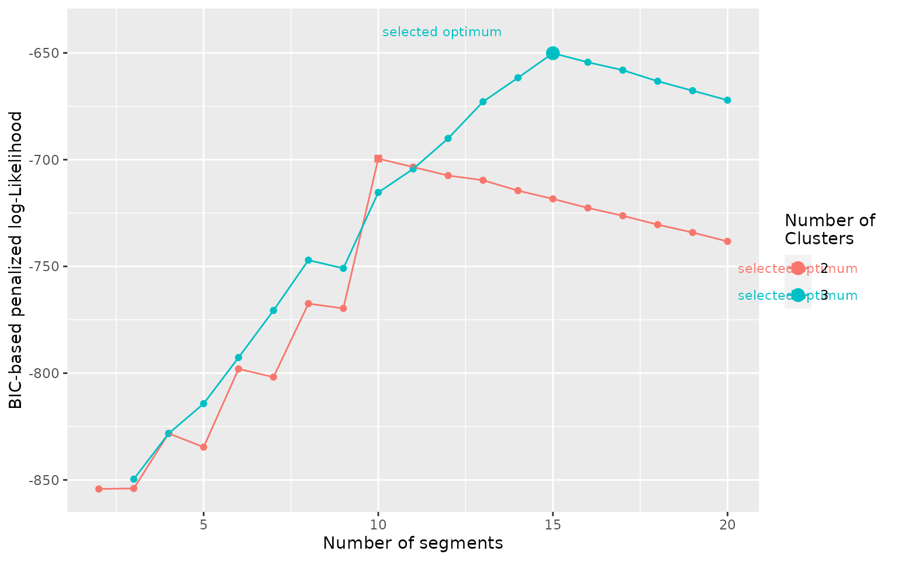

vignettes/v03_explore_outputs.Rmd
v03_explore_outputs.RmdBoth segmentation() and segclust() return objects of segmentation-class for which several function are available (see below).
There are two types of functions: (1) some are general and show likelihood for all the different segmentation; (2) other are specific to a given segmentation and requires selecting a number of segment and of cluster (if applicable).
For the functions specific to a given segmentation, if you do not provide as argument the number of segment and of cluster, the functions will automatically select the best arguments based on a penalized log-likelihood as following:
for outputs of segmentation() the optimal number of segments is selected with Lavielle’s criterium. Other number may be provided with argument nseg.
for outputs of segclust() the optimal number of cluster and segment is selected with a BIC-based penalized criterium. Other parameters may be provided with argument nseg and ncluster. It is recommended to manually choose the number of cluster based on biological knowledge or careful exploration of the BIC-based penalized likelihood, while using the BIC-selected number of segment for this number of cluster, by providing only argument ncluster.
All plot methods use ggplot2 package and return ggplot objects that can be further modified and customized using classical ggplot2 (see ggplot2 function reference).
order
If you provide argument order = TRUE to a function specific to a segmentation, then the different segment or cluster will be numbered ordered by the variable provided as order.var in the segmentation() or segclust() call.
For a specific segmentation:
plot.segmentation to show the time-series with the segment and if applicable clusters.segmap to show the results of the segmentation as a map of the trajectory (if applicable)stateplot plot summary statistics for all segment or clusters.Summary for all segmentations:
plot_likelihood for segmentation() show the log-likelihood of the segmentation for all numbers of segments.plot_BIC for segclust() show the BIC-based penalized log-likelihood of the segmentation.clustering for all numbers of segments and cluster.For a specific segmentation:
augment returns a data.frame with the original data as well as the segment or cluster associated for each data pointsegment returns a data.frame with the beginning and end of each segmentstates for segclust provides a data.frame with summary statistics for all clustersSummary for all segmentations:
logLik for segmentation() returns a data.frame with the log-likelihood for all number of segments.BIC for segclust() returns a data.frame with the BIC-based penalized log-likelihood for all number of cluster and segments.As function are really similar between segmentation and segmentation/clustering, we will show examples mostly for the segmentation/clustering outputs, but the use is very similar, argument ncluster just need to be omitted for obtaining outputs for segmentation.
data(simulmode)
simulmode$abs_spatial_angle <- abs(simulmode$spatial_angle)
simulmode <- simulmode[!is.na(simulmode$abs_spatial_angle), ]
mode_segclust <- segclust(simulmode,
Kmax = 20, lmin=10, ncluster = c(2,3),
seg.var = c("speed","abs_spatial_angle"),
scale.variable = TRUE)segmap() plot the results of the segmentation as a map. This can be done only if data have a geographic meaning. Coordinate names are by default “x” and “y” but they can be provided through argument coord.names.
segmap(mode_segclust, ncluster = 3)
stateplot() show statistics for each state or segment.
stateplot(mode_segclust, ncluster = 3)
augment.segmentation() is a method for broom::augment. It returns an augmented data.frame with outputs of the model - here, the attribution to segment or cluster.
augment(mode_segclust, ncluster = 3)segment() allows retrieving informations on the different segment of a given segmentation. Each segment is associated with the mean and standard deviation for each variable, the state (equivalent to the segment number for segmentation) and the state ordered given a variable - by default the first variable given by seg.var. One can specify the variable for ordering states through the order.var of segmentation() and segclust().
segment(mode_segclust, ncluster = 3)states() return information on the different states of the segmentation. For segmentation() it is quite similar to segment(). For segclust, however it gives the different cluster found and the statistics associated.
states(mode_segclust, ncluster = 3)logLik.segmentation() return information on the log-likelihood of the different segmentations possible. It returns a data.frame with the number of segment and the log-likelihood.
data("simulshift")
shift_seg <- segmentation(simulshift,
seg.var = c("x","y"),
lmin = 240, Kmax = 25,
subsample_by = 60)
logLik(shift_seg)plot_likelihood() plot the log-likelihood of the segmentation for all the tested number of segments and clusters.
plot_likelihood(shift_seg)
BIC.segmentation() return information on the BIC-based penalized log-likelihood of the different segmentations possible. It returns a data.frame with the number of segment, the BIC-based penalized log-likelihood and the number of cluster. For segclust() only. Note that this does not truly returns a BIC. Here highest values are favored (in opposition to BIC)
BIC(mode_segclust)plot_BIC() plot the BIC-based penalized log-likelihood of the segmentation for all the tested number of segments and clusters.
plot_BIC(mode_segclust)